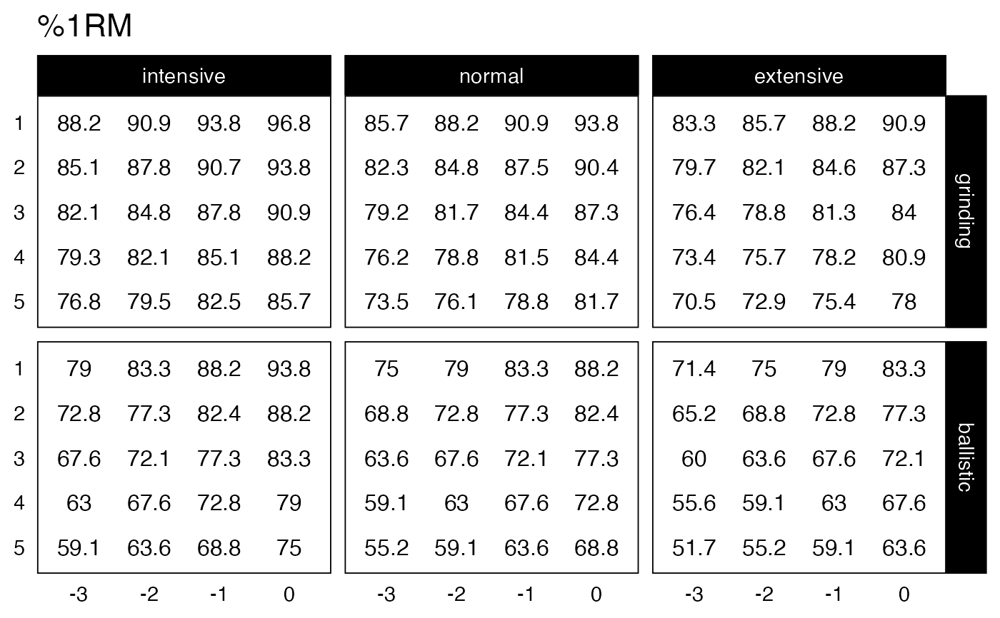
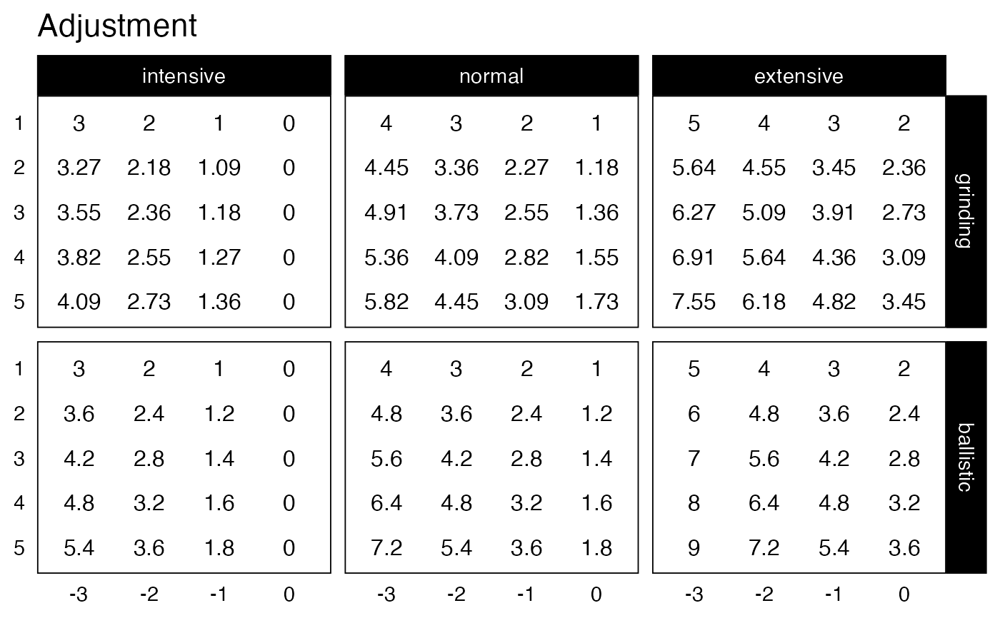

Function for creating ggplot2 plot of the Progression Table
plot_progression_table(
progression_table,
plot = "%1RM",
signif_digits = 3,
adjustment_multiplier = 1,
font_size = 8,
label_size = 2.5,
...
)Function for creating progression table
Character string. Options include "%1RM" (default) and "adjustment"
Rounding numbers for plotting. Default is 3
Factor to multiply the adjustment. Useful when converting to percentage. Default is 1
Numeric. Default is 8
Numeric. Default is 2.5
Forwarder to the generate_progression_table function
ggplot2 object
plot_progression_table(progression_RIR_increment, "%1RM")

plot_progression_table(progression_RIR_increment, "adjustment")

# Create progression pot by using specific reps-max table and klin value
plot_progression_table(
progression_RIR,
max_perc_1RM_func = max_perc_1RM_linear,
klin = 36
)